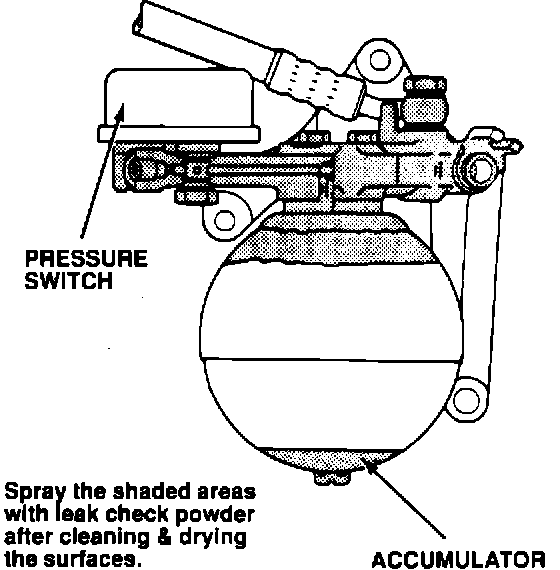
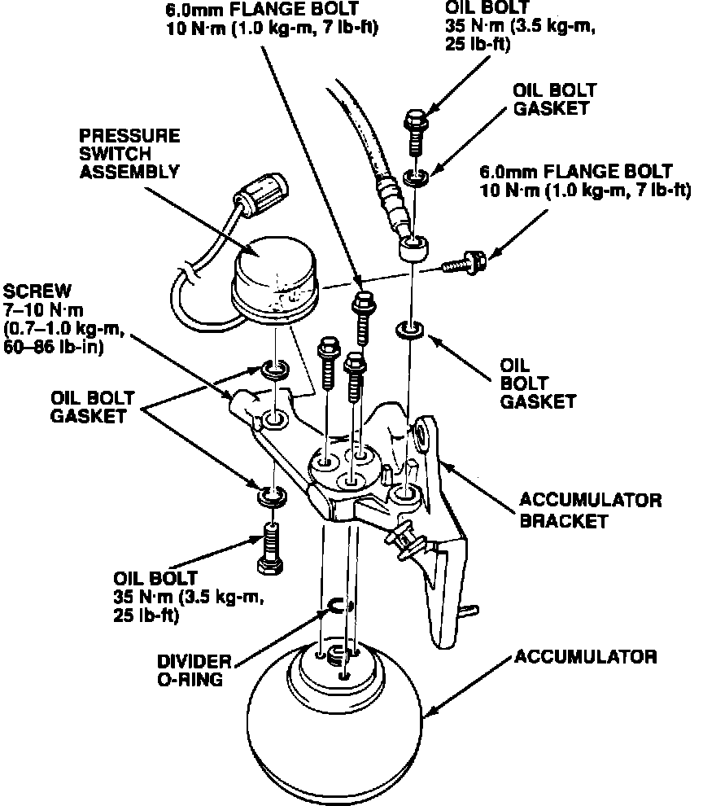

ALB Pump - Runs Often
89acura07YEAR MODEL VIN APPLICATION
1987 -1989 LEGEND ALL
L and LS
December 18, 1989
BULLETIN NO.
89-029
ALB Pump Runs Often/ALB Problem Code 1
PROBLEM
A brake fluid leak at the accumulator assembly causes the ALB pump to run often (three to four times a week) and the fluid level in the modulator reservoir to go down.
NOTE: The ALB warning light will come on and the ALB control unit will indicate Problem Code 1 if the reservoir runs out of fluid.
DIAGNOSIS
Check the modulator reservoir:
^ If the reservoir is out of fluid, yet it shows no signs of leaking, go to CORRECTIVE ACTION.
NOTE: If the reservoir is low and the top of the reservoir is wet with brake fluid, see Service Bulletin 89-022, "ALB Problem Code 1."
^ If the reservoir is low and the customer has noticed the pump running often, go to CORRECTIVE ACTION.
^ If the reservoir is full and the control unit indicates Problem Code 1, refer to the troubleshooting in the service manual.
CORRECTIVE ACTION
Perform an accumulator assembly leak check, then replace the leaking oil bolt gasket or divider O-ring.
1. Remove the battery, air cleaner case, air intake tube, and all the connectors attached to the battery mount. Remove the battery mount.
2. Remove the engine splash guard.
3. Clean the accumulator assembly thoroughly with contact cleaner or detergent and hot water. Blow the accumulator dry with compressed air.

4. Spray a leak check powder (see PARTS INFORMATION) on all the mating surfaces and fittings on the accumulator assembly, as shown.
5. Refill the modulator reservoir to the MAX level.
6. Temporarily reinstall and reconnect the battery.
7. Place the car on level ground with the wheels blocked. Put the transmission in neutral for M/T models or Park for A/T models.
8. Connect the ALB Checker, T/N 07HAJ-SG00100, and turn the Mode Selector to "1."
9. Start the engine and release the parking brake. Push the Start Test button on the ALB Checker. If the accumulator pressure is low, the ALB pump will run. If the pump doesn't run, the accumulator is already pressurized.
10. Turn the ignition switch off. Let the car sit, then inspect the accumulator for leakage (noticeable wetness or drops of fluid). It may take up to 8 hours.
NOTE: A slight discoloration of the leak check powder does not indicate a leak large enough to cause a problem.
If there are no leaks, go to step 12.

11. If the accumulator leaks from any of the mating surfaces or fittings shown below, bleed the high pressure fluid from the maintenance bleeder with the Bleeder T-Wrench, T/N 07HAA-SG00100, then replace the appropriate gasket or the O-ring. If the screw at the pressure switch-end of the accumulator bracket leaks, retorque the screw to 7-10 N-m (0.7-1.0 kg-m, 60-86 lb.in).
NOTE: The divider O-ring and oil bolt gaskets can be replaced with the accumulator still in the car.
12. Reinstall the air cleaner case, air intake tube, and engine splash guard.
PARTS INFORMATION
Oil Bolt Gasket: P/N 90545-300-000
Divider O-Ring: P/N 57139-SB0-801
Flaw Finder and Developer D-70, or equivalent, available from:
Met-L-Check Company 1639 Euclid Street Santa Monica, CA 90404
Phone: (213) 450-1111
FAX: (213) 452-4046
WARRANTY CLAIM INFORMATION
In warranty: The normal warranty applies.
Out-of-warranty: Any repair performed after warranty expiration may be eligible for goodwill consideration by the District Service Manager. You must request consideration, and get the DSM's decision, before starting work.
Operation
Description Flat Rate
Number Time
413050 Steps 1 - 9, and 12 0.8 hour
413055 Steps 1 - 12 1.3 hours
Failed P/N: 57060-SG0-872
Defect code: 060
Contention code: B07